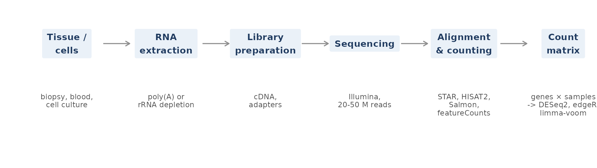
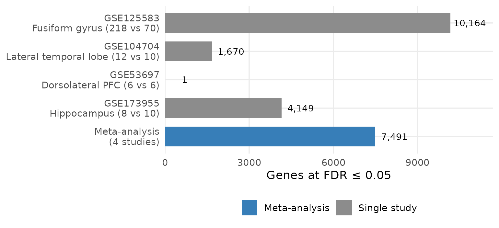
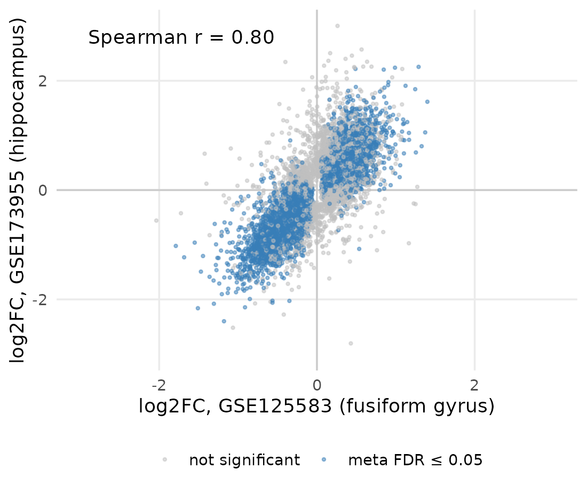
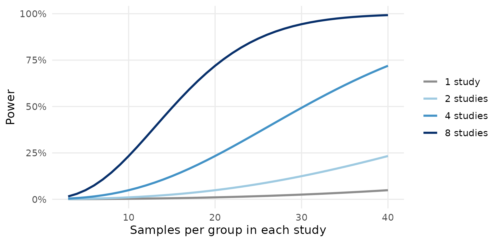
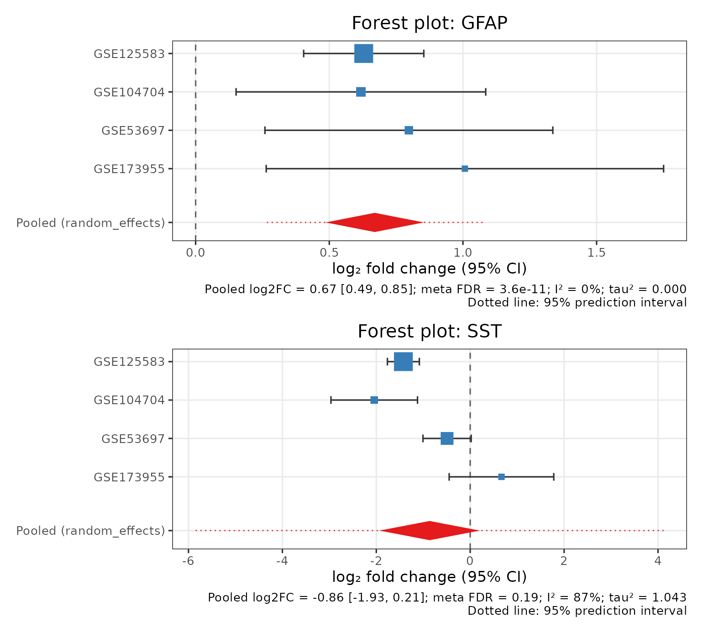
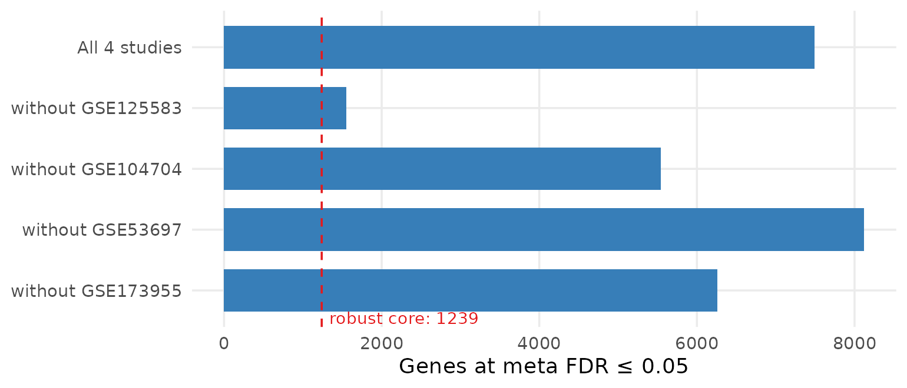
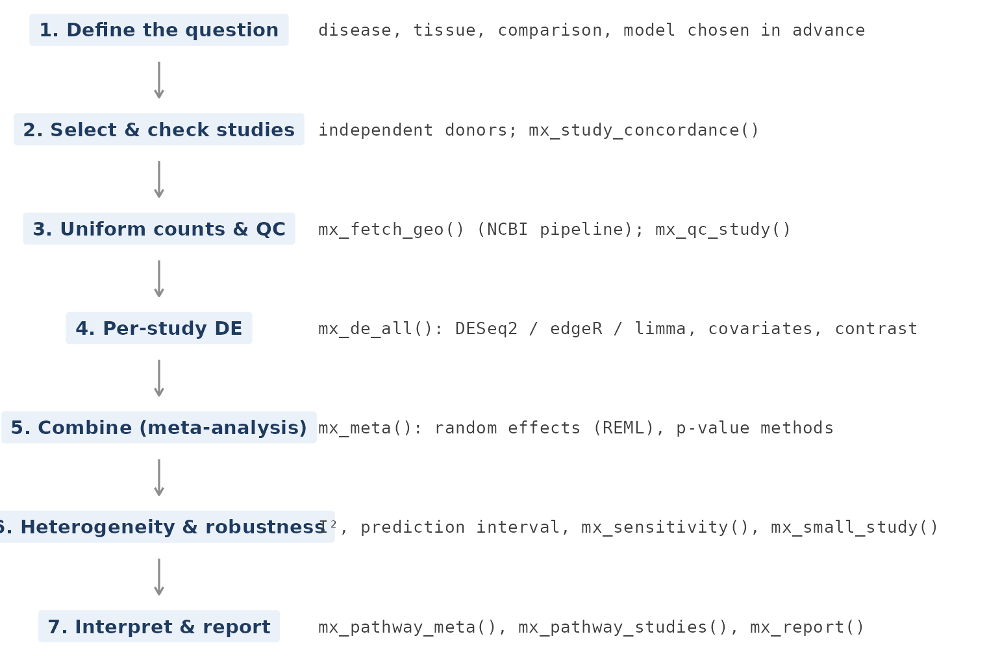

An introduction to bulk RNA-seq meta-analysis
Md. Jubayer Hossain
2026-10-14
Source:vignettes/introduction.Rmd
introduction.RmdThis article is for researchers who are new to combining gene expression studies. It explains:
- what bulk RNA-seq measures and why it is still widely used;
- why single studies are often not enough;
- what a meta-analysis adds, and how its main statistical ideas work;
- the decisions that make a meta-analysis credible.
Every real-data figure is computed when this article is built. It
uses four published Alzheimer’s disease (AD) brain cohorts that ship
with metaXpress. Figures that illustrate a concept are labelled as such.
For hands-on code, continue with vignette("quickstart")
after reading.
1. What is bulk RNA-seq?
RNA sequencing (RNA-seq) measures which genes are active in a sample, and how strongly, by sequencing its RNA molecules (Wang et al. 2009; Mortazavi et al. 2008).
In bulk RNA-seq, the RNA of many thousands to millions of cells is extracted together. The result is one expression profile per sample (a piece of tissue, a blood draw, a cell culture). Each gene’s value is the average over all cells in that sample.

Figure 1. The bulk RNA-seq workflow. Reads from each sample are aligned or pseudo-aligned to a reference and counted per gene. The resulting count matrix (genes × samples) is the input to differential expression (DE) analysis. Schematic.
The main processing steps have well-established tools and published best practices (Conesa et al. 2016; Stark et al. 2019):
- Read alignment or quantification: STAR (Dobin et al. 2013), HISAT2 (Kim et al. 2019) or Salmon (Patro et al. 2017).
- Gene-level counting: featureCounts (Liao et al. 2014).
- Statistical testing: DESeq2 (Love et al. 2014), edgeR (Robinson et al. 2010) or limma-voom (Law et al. 2014; Ritchie et al. 2015). These use count-based models, and their output is a list of differentially expressed (DE) genes with a log2 fold change and a p-value for each gene.
Why bulk, when single-cell RNA-seq exists?
Single-cell RNA-seq resolves individual cell types, but bulk RNA-seq remains the workhorse of clinical and translational research (Haque et al. 2017; Stark et al. 2019):
| Bulk RNA-seq | Single-cell RNA-seq | |
|---|---|---|
| Measures | Average expression of a sample | Expression in each cell |
| Cost per sample | Low | High |
| Genes detected per sample | ~15,000–20,000 | ~1,000–5,000 per cell |
| Typical cohort size | Tens to thousands | A few to tens of donors |
| Works on archived / degraded tissue | Often | Rarely |
| Public data available | Very large (GEO, SRA, TCGA, GTEx) | Growing |
| Best for | Disease vs control, biomarkers, cohorts, clinical samples | Cell types, cell states, development |
Bulk RNA-seq is also one of the largest public data resources in biology:
- Large reference projects: The Cancer Genome Atlas (Cancer Genome Atlas Research Network et al. 2013) and the Genotype-Tissue Expression project (GTEx Consortium 2013).
- Public archives: many thousands of smaller studies in GEO (Clough et al. 2024).
- Uniformly reprocessed collections: recount2/3 (Collado-Torres et al. 2017; Wilks et al. 2021) and ARCHS4 (Lachmann et al. 2018). These make the archived data reusable at scale.
This archive is what makes meta-analysis possible.
2. Why one study is usually not enough
Most bulk RNA-seq studies are small. A typical design has 3 to 10 samples per group. Each study also tests about 20,000 genes at once and must correct for multiple testing, usually with the false discovery rate (FDR) (Benjamini and Hochberg 1995). This has two consequences (Schurch et al. 2016):
- Many true effects are missed. A gene that changes by 40% may not reach FDR significance with 5 samples per group.
-
Many reported effects do not replicate. Effects can
come from:
- the particular cohort, tissue sampling or laboratory protocol;
- batch effects (Leek et al. 2010);
- chance.
The four AD cohorts in metaXpress show the problem clearly. They study the same disease, with the same NCBI processing pipeline, but report very different numbers of DE genes:

Figure 2. The same disease, very different results. Genes at FDR ≤ 0.05 in four independent AD brain cohorts (DESeq2), and the number at meta-analysis FDR ≤ 0.05 when the four are combined with a random-effects model. Real data.
The counts in Figure 2 vary mainly with sample size. The largest cohort, 218 AD vs 70 controls, finds over 10,000 genes. The smallest, 6 vs 6, finds one. None of the four on its own tells us which changes are general features of AD.
3. What a meta-analysis adds
A meta-analysis combines the results of several independent studies that address the same question (Ramasamy et al. 2008; Tseng et al. 2012). For gene expression, each study is first analysed on its own (the same DE analysis as above). The per-gene results are then combined.
Combining results, rather than pooling raw counts into one large dataset, means that differences between studies do not bias the per-study estimates. These include platforms, depth, library protocols and laboratory batch effects. The combination then provides:
- Power. Several modest, consistent effects add up.
- Reproducibility. A gene is reported because it changes in several independent cohorts, not because of one lucky study (Sweeney et al. 2017).
- Generality. Effects are estimated across populations, tissues and protocols, together with how much they vary.
The fold changes of independent cohorts are already related. The figure below compares the two largest AD cohorts gene by gene:

Figure 3. Independent studies agree more than their gene lists suggest. Log2 fold changes (AD vs control) of genes significant in either of the two cohorts. Points are coloured by whether the gene is significant in the meta-analysis. Real data.
mx_study_concordance() computes these correlations for
every pair of studies. A negative correlation is a warning
sign: it usually means that one study’s case/control contrast is the
wrong way round.
How much power does combining studies give?
The next figure is a simple illustration, not real data. It shows a gene with a true log2 fold change of 0.5 and a within-group standard deviation of 1 (log2 scale). The curves give the chance of detecting this gene at a significance level typical of genome-wide FDR control.

Figure 4. Illustration: combining studies increases power. Probability of detecting a log2 fold change of 0.5 (SD = 1) at α = 10⁻⁴, as a function of samples per group in each study, for one study and for an inverse-variance meta-analysis of 2, 4 or 8 equally sized studies with no between-study heterogeneity. Theoretical (normal approximation).
There is a caveat. Real studies differ from one another, and these differences reduce the gain, which is why heterogeneity matters (Section 4).
4. Key statistical ideas
Two ways to combine studies
Meta-analysis methods fall into two families, which answer different questions:
- Effect-size methods combine each study’s log2 fold change , weighting it by its precision (1 / squared standard error). They estimate how large the change is.
- P-value combination methods combine each study’s evidence for a change. Examples are Fisher’s and Stouffer’s methods, and order-statistic methods such as rOP (Song and Tseng 2014) and AW-Fisher (Li and Tseng 2011; Hu et al. 2026). They answer whether a gene changes in one, several or all studies, without estimating one common effect (Rau et al. 2014; Tseng et al. 2012).
Fixed effect versus random effects
A fixed (common) effect model assumes that every study measures the same true effect, and that the studies differ only by sampling error.
A random-effects model assumes that the true effect itself varies between studies: different tissues, populations and protocols have genuinely different effects. It estimates the average effect and the between-study variance (DerSimonian and Laird 1986; Borenstein et al. 2010).
For combining independent public cohorts, random effects is usually the honest choice. metaXpress estimates by restricted maximum likelihood (REML), which performs better than the classical DerSimonian–Laird estimator (Viechtbauer 2005; Langan et al. 2019).
Heterogeneity and the prediction interval
Two numbers describe how much studies disagree:
- is the percentage of variation between studies that is due to real differences rather than chance (Higgins and Thompson 2002).
- The 95% prediction interval gives the range in which the effect in a new study is expected to fall (Higgins et al. 2009).
If the prediction interval excludes zero, the change is expected to reproduce in new cohorts. If it crosses zero, the change is significant on average but not reliably present everywhere.
The two forest plots below show both situations in real data:

Figure 5. Reading a forest plot. Each square is one study’s log2 fold change, with its 95% confidence interval; square size reflects the study’s weight. The red diamond is the pooled random-effects estimate and its 95% CI, and the dotted line is the 95% prediction interval. GFAP (astrocyte marker) is consistent across all cohorts. SST (somatostatin interneurons) is lost strongly in two cohorts but not in the others: high I² and a wide prediction interval. Real data.
In the AD meta-analysis, 7,491 genes are significant at meta FDR ≤ 0.05. For 2,133 of them the prediction interval excludes zero. These are the changes most likely to transfer to a new AD cohort.
Robustness: does one study drive the result?
A meta-analysis can be dominated by its largest study. Leave-one-out analysis repeats the meta-analysis once without each study in turn.

Figure 6. Leave-one-out analysis. Genes at meta FDR ≤ 0.05 with all four AD cohorts and with each cohort removed in turn. The dashed line marks the robust core: genes that stay significant, in the same direction, whichever study is removed. Real data.
Removing the large fusiform-gyrus cohort removes most significant genes, because much of the evidence comes from that one study. The robust core is the most defensible result to report.
5. What meta-analysis is used for
Gene-expression meta-analysis has produced results that single studies could not:
-
Diagnostic signatures. Multi-cohort analyses have
identified small gene sets that diagnose a condition in new, independent
cohorts:
- sepsis and sterile inflammation (Sweeney et al. 2015);
- active tuberculosis (Sweeney et al. 2016).
- Shared disease mechanisms. A “common rejection module” of genes is up-regulated in acute rejection of several transplanted organs. It pointed to existing drugs as candidate therapies (Khatri et al. 2013).
-
Drug repurposing. Disease signatures from public
data can be matched against drug-induced expression profiles to find
compounds that reverse them (Lamb et al.
2006; Sirota et
al. 2011; Subramanian et al. 2017). See
vignette("downstream_biology"). - Neurodegeneration and other complex diseases. Meta-analysis distinguishes consistent changes from cohort- and region-specific ones (Heberle et al. 2024).
- Reuse of public data. Uniformly processed resources make it possible to reanalyse thousands of existing studies (Collado-Torres et al. 2017; Lachmann et al. 2018; Clough et al. 2024).
- Clinical translation. Robust expression signatures are a step towards RNA-based diagnostics (Byron et al. 2016).
6. A checklist for a credible meta-analysis

Figure 7. The analysis workflow and the metaXpress functions for each step. Schematic.
The following practices come from the gene-expression meta-analysis literature (Ramasamy et al. 2008; Tseng et al. 2012; Sweeney et al. 2017) and from general meta-analysis methodology.
- Choose the question and the method before seeing results. Random effects estimates an average effect. maxP or rOP ask whether a gene changes in all or most studies. Picking whichever method gives the most genes inflates false findings.
- Make sure studies are independent. Two GEO series from the same lab or brain bank may contain the same donors, which would count them twice. Check donor and case identifiers.
- Harmonise the comparison. Every study must compare the same groups in the same direction (case / control). Check with fold-change concordance.
- Start from raw counts. Run DE within each study, adjusting for known covariates such as sex or batch. Do not feed batch-corrected values into count models (Nygaard et al. 2016).
-
Report more than p-values. Report:
- the pooled effect with its confidence interval;
- and ;
- the prediction interval;
- which genes survive leave-one-out analysis.
- Be cautious with few studies. With fewer than about five studies, is imprecise. Small-sample adjustments such as HKSJ (IntHout et al. 2014) give better-calibrated confidence intervals, but can make genome-wide significance impossible. Tests for publication bias (e.g. Egger’s test (Egger et al. 1997)) need about ten studies (Sterne et al. 2011).
- Interpret pathways at the right level. Gene-set enrichment (Subramanian et al. 2005; Korotkevich et al. 2016; Liberzon et al. 2015) can be run on the meta-signature, or within each study and then combined (Shen and Tseng 2010).
- Remember tissue composition. In bulk data, a change in cell-type proportions looks like a change in gene expression. Check cell-type marker scores (Becht et al. 2016).
7. Glossary
- log2 fold change (log2FC)
- Difference in expression between groups on a log2 scale. +1 means twice as high in cases; −1 means half.
- Standard error (SE)
- Uncertainty of a study’s log2FC. Smaller SE means more weight in the meta-analysis.
- FDR / adjusted p-value
- Expected proportion of false discoveries among the genes called significant (Benjamini and Hochberg 1995).
- Fixed effect
- Model assuming one true effect shared by all studies.
- Random effects
- Model assuming true effects vary between studies around an average.
- (tau-squared)
- Between-study variance of the true effects.
- Share of total variation due to between-study differences (0–100%).
- Prediction interval
- Expected range of the effect in a new study.
- Leave-one-out
- Re-running the meta-analysis without each study in turn.
- Concordance
- Agreement of fold changes between two studies.
8. Where to go next
-
vignette("quickstart"): run your first meta-analysis in five minutes. -
vignette("case_study"): the full AD analysis, step by step, with every decision explained. -
vignette("full_workflow"): from GEO accession numbers to an HTML report. -
vignette("downstream_biology"): transcription-factor activity, cell composition, co-expression modules and drug reversal.